Our research is generously supported by the following grants:
Rethinking Data Center Computation and Communication Design for Green AI
Next-Generation IoT Edge Computing through Efficient Software Programmable Accelerators
Provost's Chair Professor, NUS
School of Computing, NUS
Institute of Microelectronics, A*STAR

I2R, A*STAR